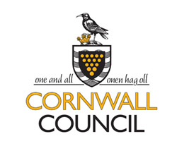

Parish Council
Sennen parish is the mosts westerly parish on mainland Britain. The council is comprised of local business owners and people with a local interest. The members are voted in every 4 years.
The Council meets at 7pm on the first Friday of each month, at Blue Haven, Sennen. All are welcome to attend.
The council falls under the authority of Cornwall Council
Minutes of previous meetings
- January 2014
- December 2013
- November 2013
- October 2013
- September 2013
- August 2013 - No meeting
- July 2013
- June 2013
- May 2013
- April 2013
- March 2013
Contact Details
Clerk's contact details
Mrs Alexis Male
2 Lands End Road
St Buryan
Penzance
Cornwall
TR19 6ES
Email address: sennenpc@btinternet.com
Telephone number: 01736 811020
Chairperson's contact details
Cllr Mark Gwennap
Skewjack Farm
St. Levan
Penzance
Cornwall
TR19 6ND
Telephone number: 01736 871221